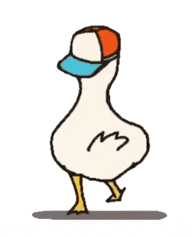
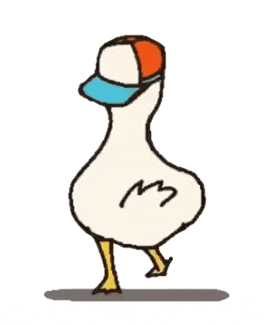

What it is
ImageLib is a JavaScript library for creating beautiful and interactive image galleries on your website. It allows you to display a single image or a full gallery with features like autoplay, zoom, and scroll.
By default, it displays a gallery, but you can easily start in single image view by adding the single attribute.
How to use
To get started with ImageLib, simply include the main JavaScript file in the <head> of your HTML document:
<script src="https://pooiod.github.io/imagelib/main.js"></script>Then, use the <gallery> custom element to wrap your images. You can enable autoplay by adding the autoplay attribute.
<gallery autoplay>
<img src="/images/image1.webp">
<img src="/images/image2.png">
<img src="/images/image3">
</gallery>ImageLib also lets the user zoom and scroll within the images for a more detailed view.
Example
Here is a live example of ImageLib in action.
 
